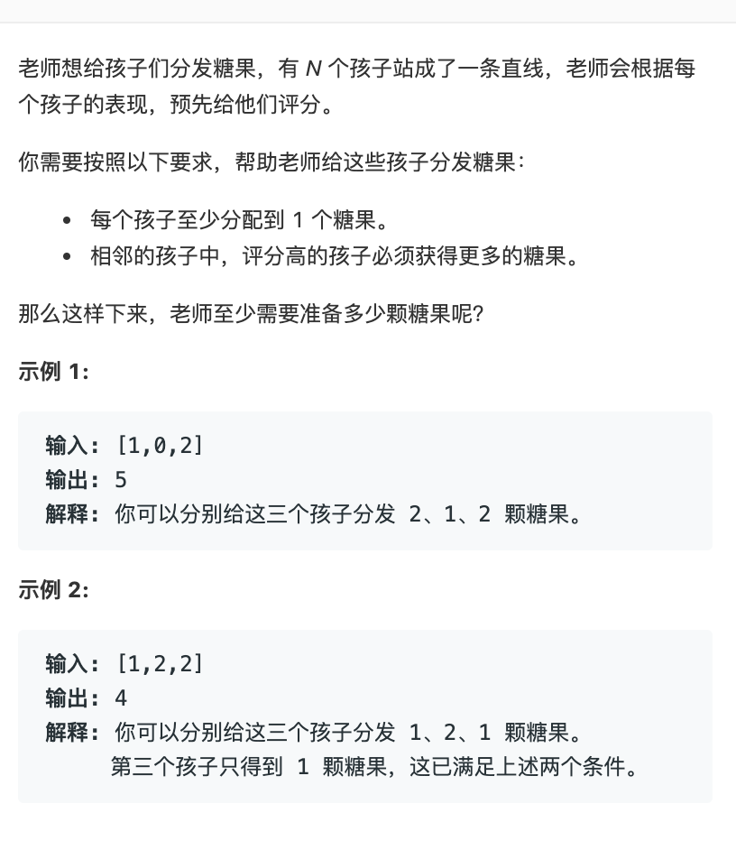

第一篇关于算法题的 Blog。据小马同学，这个题是字节跳动的(待考)。大意一个很抠的老师，给一队孩子评分，然后根据评分发糖。要求每个孩子至少分配到一颗糖，且在相邻孩子中，评分高的孩子必须获得更多的糖。
原题干见下图：

正文
My Solution
第一遍的代码，写了很多的 if-else 并且不解决问题。原先的思路是按递增和递减两种情况来考虑，但当时忽略了一个很不符合常识的情形，就是两个相邻孩子，如果评分一样，糖果数量有可能相差很大。这里很诡异的地方在于，某个小孩的糖果数量只和与他相邻孩子得分的不相同有关，得分相同反而造成没有关联。
晚上回到家，重新理了下思路。打算针对含 n 个元素的得分列表，同时计算每个元素与它左右邻点的相互关系（左点减中点，右点减中点）。由于最左和最右，只有一个相邻点，就对其进行复制延展，得到 n+2 元素新列表。针对序号 1 ~ n 元素，计算其左右点与它的差值(列表下标以 0 开始)，得到由 n 个二元元组组成的列表。
这样对于每个原来的元素，每个相邻点（左右点）和它的大小关系有三种，大于、等于、小于。左右相邻点与它的关系综合起来有九种情形（3*3），这九种情形又可以分为四种大的情形：
- 情形 1: 如代码中简图所示，左边两种情况可以确定中间元素为 1；最右情况没有妨碍的可以暂时把中间元素设为 1，后期回溯处理会对其修正，暂时设定为 1，只是方便计算与后邻点的相对值，该情况是回溯过程的可能的终止态之一
- 情形 2: 如代码中简图所示，左边两种情况可以确定中间点比左边点大 1；最右情况是中间点至少比左边点大 1，可暂时设为比左点加 1，后期回溯处理会对其修正，取左右两侧约束下的最大值，该情况是回溯过程可能的终止态之一
- 情形 3: 如代码中简图所示，可以确定中间点比左点小 1，比右点大 1，这种情形是后面回溯过程的中间形态
- 情形 4: 如代码中简图所示，这是单调递减终止情形，也是需要开始回溯操作的起始情形
通过分类，对于单调递增的起始情况、中间情况、终止情况，单调递减的起始情况（也就是回溯处理的终止情况）、中间情况和终止情况（回溯处理的起始情况），以及分数相同的情况，做不同处理。程序优先先处理递增情形，遇到递减最低点（只需考虑单调递减的最低点）就进行回溯处理。
代码如下：
1 | def find_min_sugers(scores = None): |
困，洗洗睡 z…z…
总结
个人对算法题，爱恨交织。一方面，算法题是一种众人面对经典计算问题的经验积累，用于后人的思维训练，可提高解决相似问题的能力。另一方面，算法题可以通过题海战术可以攻克，对我中等智力的人，如果之前做过，那么遇到面试算法题，可以做出来（至少是有思路的），如果没遇到过，短时间内（面试环境下）做不出来是大概率事件。所以算法题考察的是被面试者是否够中等智力，以及之前是否花了时间去做专门训练这块。
就我当前这种 WEB 初级开发而言，我更愿意花时间去学更实用的东西（框架、存储、缓存、协议），而不愿单纯做思维游戏。然而，这种想法有什么 egg use，你能让面试取消算法题？不过，数据结构是真的重要，到处都是，乖乖学吧。